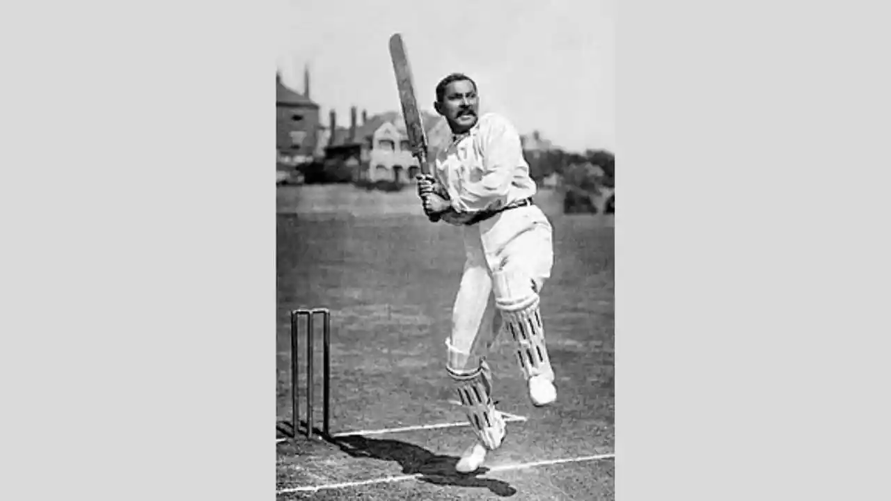
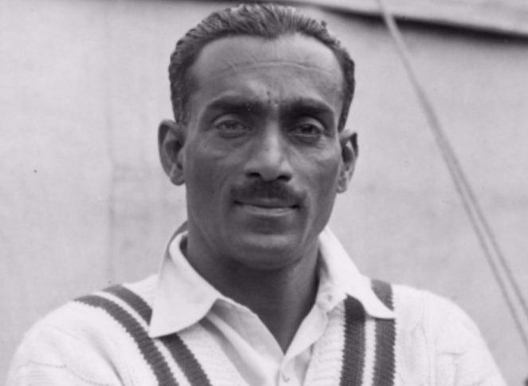
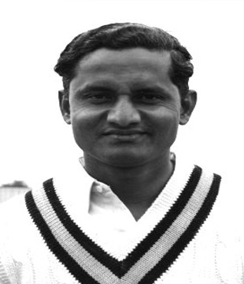
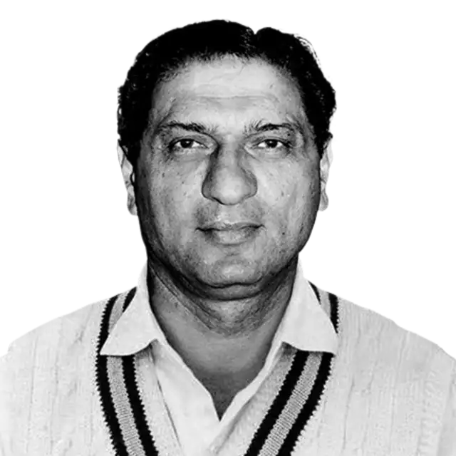
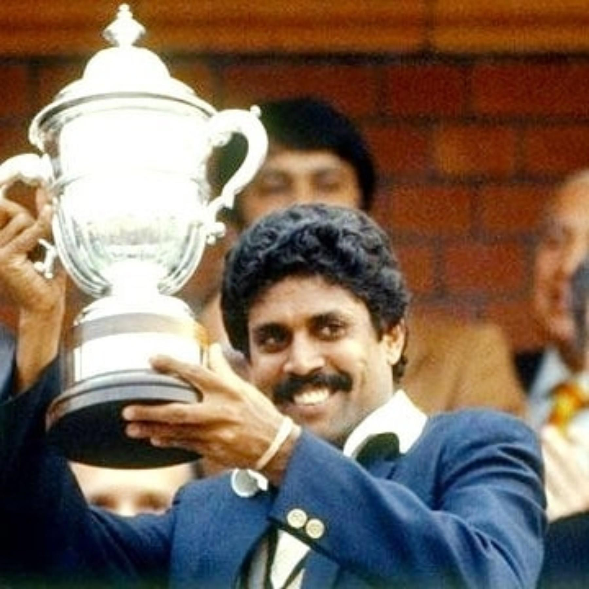
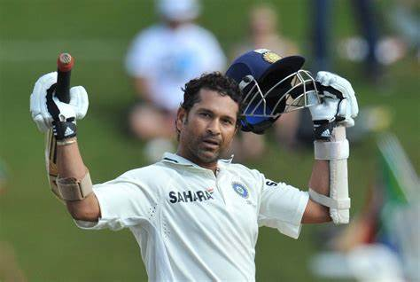
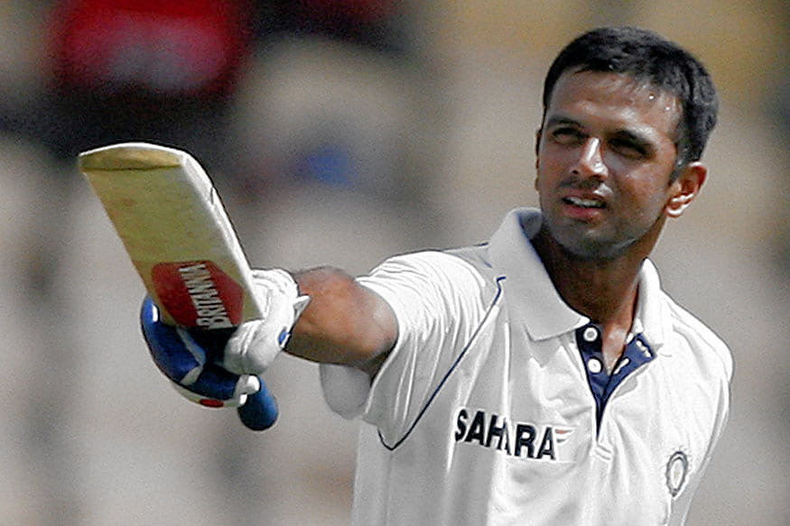
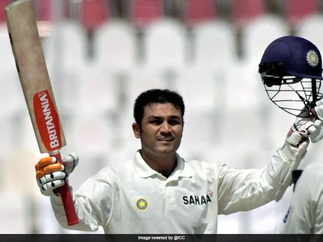
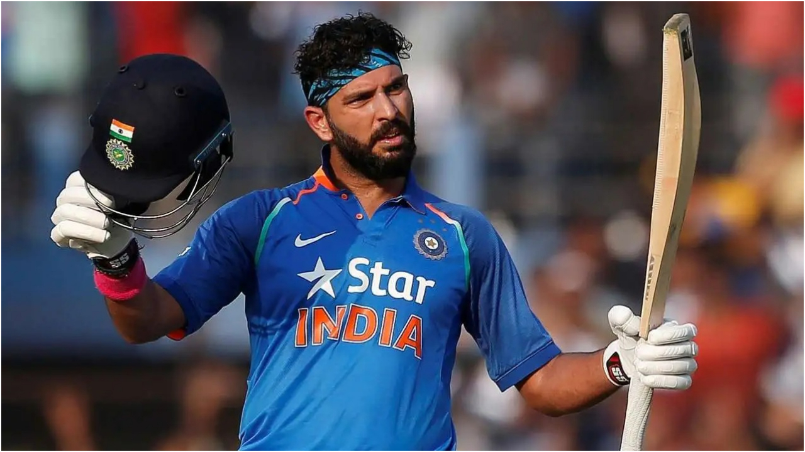
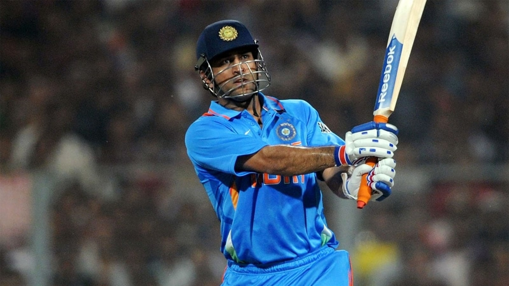

Cricket holds a special place in the hearts of Indians. It is more than just a sport; it is a passion, a religion, and a unifying force. Over the decades, India has produced numerous cricketing legends who have not only achieved remarkable feats on the field but have also shaped the nation's cricketing identity. This blog post celebrates these titans of the willow and their enduring legacy.
The Early Pioneers (1890s - 1950s)
Ranjitsinhji (1896-1902)
Ranjitsinhji was a pioneer of Indian cricket, though he played for England. His elegant stroke play and introduction of the leg glance revolutionized batting techniques. He proved that Indian cricketers could compete with the best, inspiring future generations. His innovative approach to batting provided an early glimpse of the talent India had to offer. His impact extended beyond cricket, contributing to a growing sense of national pride. Even today, he is remembered as one of the finest batsmen of his era.
C.K. Nayudu (1916-1941)
India's first cricketing superstar, C.K. Nayudu, was a dominant all-rounder known for his powerful hitting and aggressive captaincy. His performances against formidable English teams showcased India's growing cricketing talent. He played a crucial role in popularizing cricket in India, particularly in the pre-independence era. As the captain of India's first-ever Test match in 1932, his contributions laid the foundation for Indian cricket's evolution into a competitive force.
Vijay Hazare (1934-1953)
A prolific batsman, Vijay Hazare played a crucial role in India's early Test cricket days. His resilience and ability to score big under pressure set a precedent for future Indian cricketers. As India's first batsman to score a Test century against England, his ability to anchor the innings and lead from the front made him a pillar of Indian batting. His leadership skills and batting prowess helped shape Indian cricket in its formative years.
Polly Umrigar (1948-1962)
A reliable middle-order batsman, Polly Umrigar provided stability to the Indian batting lineup. Known for his elegant stroke play, he was the first Indian to score a double century in Test cricket. As a dependable captain, he played a key role in India's growth as a competitive team. His mentorship of younger players helped build a solid foundation for the future of Indian cricket.
The Transformative Years (1950s - 1980s)
Mansur Ali Khan Pataudi (1952-1970)

A charismatic leader, Mansur Ali Khan Pataudi transformed Indian cricket. Despite losing vision in one eye, he led the team with courage and aggression. He introduced a more attacking style of cricket, believing in playing to win rather than just competing. His leadership instilled self-belief in Indian cricketers, shifting the team's mindset from a defensive to an aggressive approach.
Bishen Singh Bedi (1966-1979)

A masterful left-arm spinner, Bishen Singh Bedi was known for his artistry and flight. His control and guile made him one of the greatest spinners of all time. His ability to outthink batsmen made him a formidable bowler, and his mentorship helped shape the careers of many young spinners. He was also an outspoken advocate for fair play and integrity in the sport.
Sunil Gavaskar (1971-1987)

Sunil Gavaskar was India's first global batting superstar. His impeccable technique and composure against the world’s fastest bowlers set new standards for opening batsmen. As the first cricketer to score 10,000 runs in Test cricket, his resilience against the feared West Indian pace attack is legendary. His contributions helped Indian cricket gain respect on the global stage.
Kapil Dev (1978-1994)
A legendary all-rounder, Kapil Dev led India to its first World Cup triumph in 1983. His fearless captaincy changed the perception of Indian cricket. As India's highest wicket-taker in Tests for many years, he also played many memorable innings with the bat. His never-say-die attitude and aggressive style of play made him one of the greatest all-rounders of all time.
The Golden Era (1990s - 2010s)
Anil Kumble (1990-2008)

India’s most successful bowler, Anil Kumble, achieved the rare feat of taking ten wickets in a single innings against Pakistan. Known for his determination and never-give-up attitude, he was a match-winner for India in many crucial games. His ability to extract turn and bounce even on flat pitches made him a feared opponent.
Sachin Tendulkar (1989-2013)
Widely regarded as the greatest batsman in cricket history, Sachin Tendulkar held numerous records and was the face of Indian cricket for over two decades. With 100 international centuries and the highest run tally in both Tests and ODIs, his ability to adapt to different formats and conditions made him a true legend of the game.
Sourav Ganguly (1992-2007)

A transformative leader, Sourav Ganguly's aggressive captaincy instilled confidence in Indian cricketers, leading to remarkable overseas victories. He built a team that could compete and win in all conditions. His leadership played a crucial role in developing the modern Indian cricket team.
Rahul Dravid (1996-2012)
Rahul Dravid was the embodiment of patience and discipline. Known as 'The Wall,' he played several match-saving and match-winning knocks. His ability to bat for long hours and anchor the innings made him one of India's most dependable batsmen. He is also highly regarded as a mentor and coach for young cricketers.
VVS Laxman (1996-2012)

VVS Laxman was an artist with the bat. His iconic 281 against Australia at Eden Gardens is regarded as one of the greatest innings of all time. His ability to play match-winning knocks under pressure made him a valuable asset for India. He was known for his elegance and wristy stroke play, which mesmerized fans worldwide.
The Modern Era (2010s - Present)
Virender Sehwag (1999-2013)
Revolutionizing opening batting with his aggressive style, Virender Sehwag's fearless approach changed how Test cricket was played. He was the first Indian to score a triple century in Test cricket—and did so twice. His explosive batting provided India with fast starts and put pressure on opposition bowlers.
Yuvraj Singh (2000-2017)
A match-winner known for his explosive batting and athletic fielding, Yuvraj Singh's six sixes in an over during the 2007 T20 World Cup was a defining moment. He played a key role in India's 2011 World Cup triumph. His fight against cancer and subsequent comeback remains an inspiring story.
MS Dhoni (2004-2019)
One of the greatest captains in cricket history, MS Dhoni's cool demeanor under pressure and innovative captaincy won India three ICC trophies. His ability to finish matches with calculated hitting and sharp wicket-keeping skills made him an invaluable player.
Virat Kohli (2008-Present)

One of the finest batsmen of the modern era, Virat Kohli's aggressive approach and impeccable fitness have set new standards in cricket. Leading India to numerous victories across formats, he is one of the fastest batsmen to reach multiple run milestones. His work ethic and commitment to the game have inspired many young cricketers to focus on fitness and professionalism.
Overall International Stats
| Player | Matches | Runs | Batting Avg | 100s | Wickets | Bowling Avg |
|---|---|---|---|---|---|---|
| Ranjitsinhji | 15 (FC) | 989 | 56.00 | 2 | 0 | N/A |
| C.K. Nayudu | 7 | 350 | 25.00 | 0 | 9 | 42.00 |
| Vijay Hazare | 30 | 2192 | 47.65 | 7 | 20 | 61.00 |
| Kapil Dev | 356 | 9031 | 27.53 | 9 | 687 | 27.53 |
| Sachin Tendulkar | 664 | 34357 | 48.52 | 100 | 201 | 54.26 |
| Sourav Ganguly | 421 | 18575 | 41.46 | 38 | 132 | 38.49 |
| Rahul Dravid | 509 | 24208 | 45.41 | 48 | 4 | 39.25 |
| VVS Laxman | 134 | 8781 | 45.97 | 17 | 2 | 69.50 |
| Virender Sehwag | 374 | 17253 | 40.60 | 38 | 136 | 41.75 |
| Yuvraj Singh | 402 | 11778 | 35.05 | 17 | 148 | 38.68 |
| MS Dhoni | 538 | 17092 | 44.74 | 16 | 1 | 31.00 |
| Virat Kohli | 511 | 25461 | 53.63 | 75 | 8 | 166.25 |
About the Author
Blog by: Bhanu Prakash
URL: To be created
LinkedIn: To be pasted